Teaching and practice
News
A dated log of teaching, advising, and practice.
Led the information session for MBA students considering the Business Analytics track. About the track

Opened the Artificial Intelligence for Business Leaders agent lab with how fast this is moving. A year earlier, superforecasters put the chance of AI solving a Millennium Prize problem by this fall at 1.7 percent, and industry experts at 4.6 percent. Two weeks before class, it happened. The forecasts


 AI for Leaders
AI for LeadersSame class: Dartmouth's provost defended having used AI on his published writing since 2022, after a detector flagged it as almost entirely AI-written. We talked about where assistance ends and authorship begins. The story

Became faculty coordinator of the MBA Business Analytics track at Tepper. About the track

Opened Artificial Intelligence for Business Leaders with OpenAI's proof of the Navier-Stokes problem, one of the seven $1 million Millennium Prize problems, announced a few hours after our previous class. By our rough math in class, it took about $100 million of compute to win a $1 million prize. The story


 AI for Leaders
AI for LeadersSame class, darker headline: an Anthropic alignment lead put the chance that AI kills all humans within a decade at more than 10 percent. We set it next to the p(doom) numbers other AI leaders have given, and a week later the class gave its own. The median was 20 percent. The story
Started Artificial Intelligence for Business Leaders on the GPT-6 Astra launch, which reached the human baseline on ARC-AGI-3 the evening after our last class. Jensen Huang posted that AGI has arrived. We put his claim next to Yann LeCun's skepticism. The story
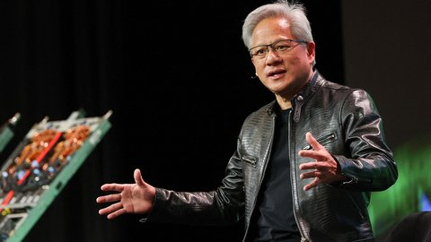
AI for LeadersOpened the history of AI in Artificial Intelligence for Business Leaders with the Mechanical Turk, the 1770 chess machine with a person hidden inside, and the news from the day before: Amazon is shutting down its Mechanical Turk marketplace after 21 years, the human workforce that labeled data for a generation of machine learning. The story
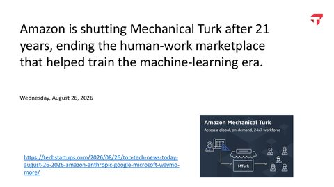
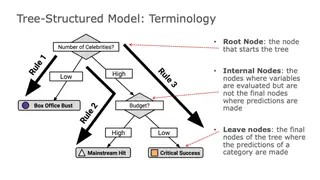

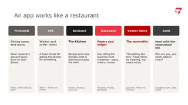
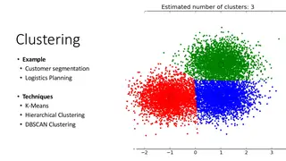
AI for LeadersTaught the first class of Artificial Intelligence for Business Leaders, a new undergraduate course I built. Students learn how AI works, work hands-on with AI agents, and then judge where AI creates value across marketing, finance, operations, and strategy, and how to defend that judgment to executives.

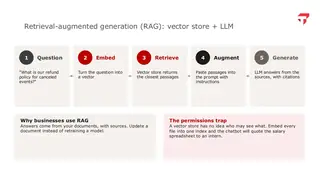
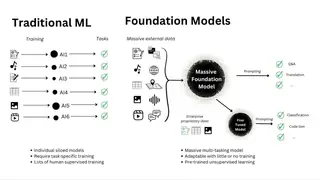
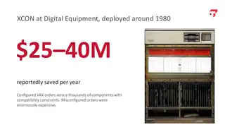
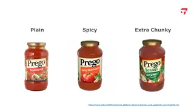
AI for LeadersStarted the third run of AI Methods for Social and Visual Data, with agents moved earlier in the term and a summary and cleaned transcript for students after every class.


 AI Methods
AI MethodsLed a discussion at the Tepper AI-Exchange on what I learned building two new AI courses: what worked in the MBA course AI Methods for Social and Visual Data, and what I was changing for the new undergraduate course, Artificial Intelligence for Business Leaders. Slides and summary
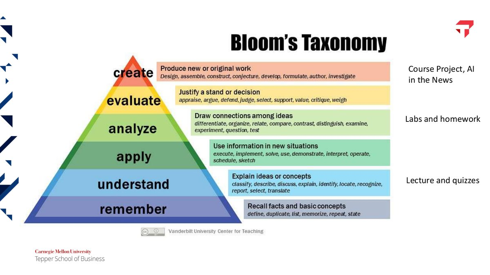
 AI Methods
AI MethodsFinished recording the MS in Business Analytics Math Skills Workshop, a self-paced course for incoming MS in Business Analytics students that runs from algebra through gradient descent, PCA, and statistical inference.


 Math Skills
Math SkillsReceived the George Leland Bach Excellence in Teaching Award, voted by the MBA Class of 2026 and presented at the MBA diploma ceremony. Watch the presentation
Really proud of this summer's AI Methods final projects. Three of the nineteen are already in use, and they range from social listening on an aircraft maker's safety crisis to an offline tool that helps bomb-disposal teams identify ordnance.


 AI Methods
AI MethodsTaught AI Methods for Social and Visual Data for the second time, rebuilt for the summer with one live session a week and hands-on Python videos for every module.

 AI Methods
AI MethodsTalked with Tepper for a Faculty Spotlight on what students learn in the MS in Business Analytics, and why I describe business analytics as a decathlon. Watch the video

Started teaching Machine Learning for Business Applications to the in-person MS in Business Analytics cohort, redesigned around AWS. Students take a model from S3 through SageMaker to a database they run themselves and a live dashboard.


 ML in Business
ML in BusinessMade a cameo in a Tepper reel for the end of Mini 3: your professor tells a joke that is not funny, but finals are next week. For the record, the jokes are funny. Watch on Instagram
Started teaching Machine Learning Foundations with Python at Heinz College, rebuilt around four applied projects on policy questions, from broadband subsidies to student loan complaints.


 ML Foundations
ML FoundationsAdvising two MS in Business Analytics capstone teams this spring.
Taught Managing and Assessing Tech Talent and Organizations for CMU Qatar, my first course in Doha since 2016: mock technical interviews on Zoom, then an in-person week on teams and culture.


 Tech Talent
Tech TalentTaught Data Mining in person and online hybrid in the same seven-week term, and added principal component analysis to the course.


 Data Mining
Data MiningTaught the first class of AI Methods for Social and Visual Data, a course I built for MBA and master's students on text, images, and AI agents, using foundation models rather than training them.


 AI Methods
AI MethodsJoined gAIm Systems as Senior Director of AI and Data Science.
Proud of this spring's Data Mining final projects: teams brought their own questions, from predicting baseball Hall of Fame induction to siting EV chargers in Pennsylvania.


 Data Mining
Data MiningThis spring's Data Visualization final projects were 29 recorded data stories, from Netflix's global catalog to city-by-city warming and public-sector dashboards.
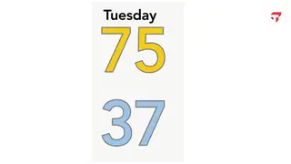
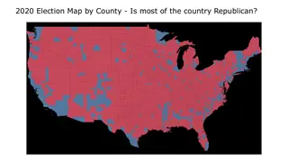
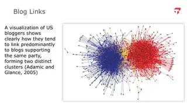
Data VizPoets & Quants profiled Tepper's MBA Class of 2026, and Tepper's director of masters admissions named me as the new professor teaching business analytics in the MBA program. Read the profile
Rebuilt Data Visualization entirely in Tableau for its second run, added clustering, network graphs, and explainable AI, and recorded about fifty short screencast lessons. Also started teaching its MS in Business Analytics counterpart, Data Exploration and Visualization.
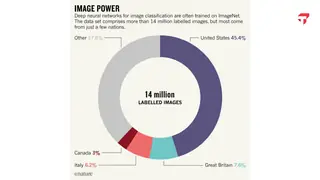
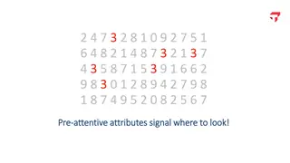
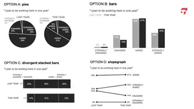
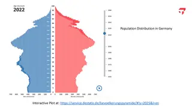
Data VizAdvised five MS in Business Analytics capstone projects.
Taught Data Mining for the third time and moved it from R to Python, adding time series forecasting and a session on building data-driven products to clustering, regression, classification, and text mining.


 Data Mining
Data MiningStarted teaching Introduction to Probability and Statistics, the first quantitative course in the full-time MS in Business Analytics, pairing every distribution with its Excel formula and its Python call.


 Prob & Stats
Prob & StatsJoined Tepper as Assistant Teaching Professor of Business Analytics.
Taught in the Business Analytics Summer Summit.
Proud of the first Data Mining final projects: sixteen online hybrid MBA teams, many working on data from their own employers.


 Data Mining
Data MiningStarted teaching Data Visualization with an evening MBA section, mixing Tableau with R and ggplot2.
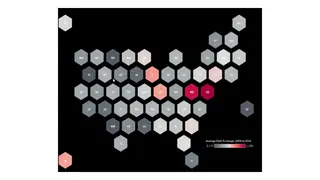
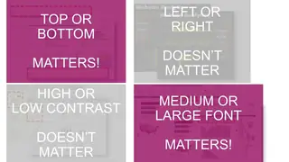
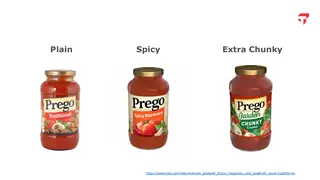
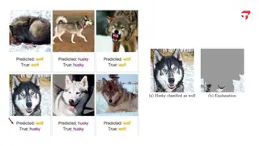
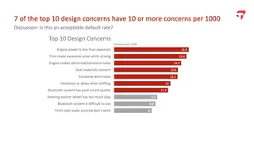
Data VizTaught Data Mining for the second time, rebuilt for the online hybrid MBA with a recorded video module for each topic and a self-directed final project in place of the exam.


 Data Mining
Data MiningAdvising three MS in Business Analytics capstone teams this spring, with Tindoori Labs, Marinus Analytics, and 412 Food Rescue.
Started teaching Data Mining to full-time MBA students as an adjunct, redesigning it around business questions, with labs in R and tidymodels.


 Data Mining
Data Mining
Shared elsewhere